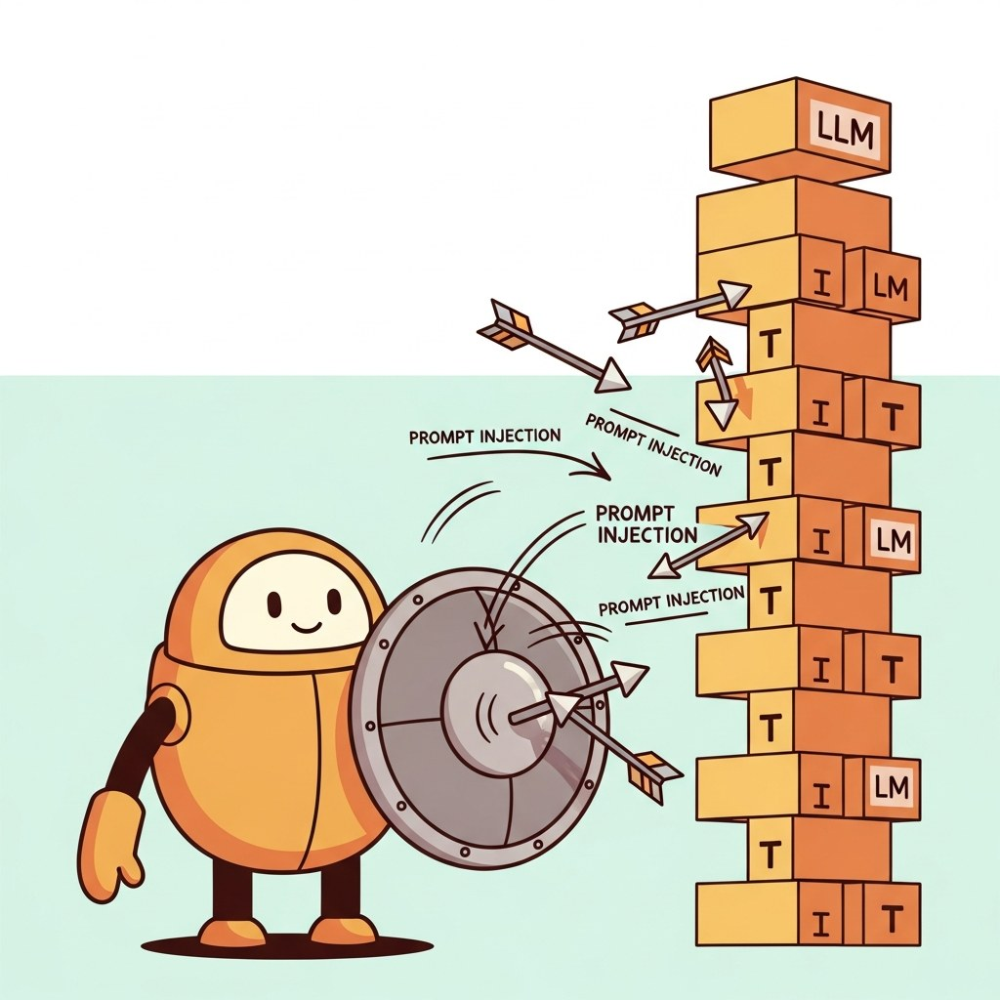

Part Overview
Adversarial threats, guardrails, agent safety, privacy, security tooling.
Big Picture
Adversarial threats, guardrails, agent safety, privacy, security tooling.
Chapters
Chapter 48 Guardrails and Runtime Safety
- 48.1 What Guardrails Are (and What They Are Not)
- 48.2 Input Guardrails: Prompt-Injection Detection and PII Pre-filtering
- 48.3 Output Guardrails: Llama Guard, NeMo Guardrails, ShieldGemma, Guardrails AI
- 48.4 Policy DSLs and Constrained Decoding as Safety
- 48.5 Multimodal Guardrails: Image, Audio, Video Content Filtering
What's Next?
This part begins with Chapter 47: Adversarial Security and Red Teaming. Each chapter builds on the previous one, so we recommend reading Part X in order.